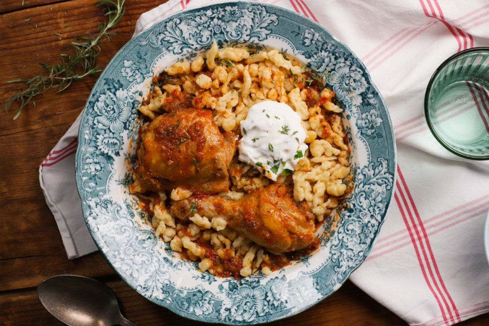

Receptgyűjtemény
Gáspár Bea 10 legszuperebb receptje 2022-ben
Töltött káposzta sok hússal>>>
Töltött káposzta sok hússal Bea konyhájából
Lasagne bolognai szósszal>>>
Gáspár Bea lasagne receptje
Sportszelet>>>
Sportszelet, ahogy Gáspár Bea készíti
Fanta szelet extra narancsosan>>>
Gáspár Bea fanta szelete

Csirkepörkölt>>>
Csirkepörkölt nokedlivel
Zserbó>>>
Csodálatosan finom zserbó Gáspár Bea konyhájából
Túrós ropogós>>>
Gáspár Bea túrós ropogós receptje
Tárkonyos csirkegombócleves>>>
Csirkegombóc leves, ahogy Gáspár Bea készíti
Sacher torta>>>
Sacher torta, ahogy Gáspár Bea készíti
Csülkös bableves>>>
Csülkös bableves, ahogy Gáspár Bea készíti